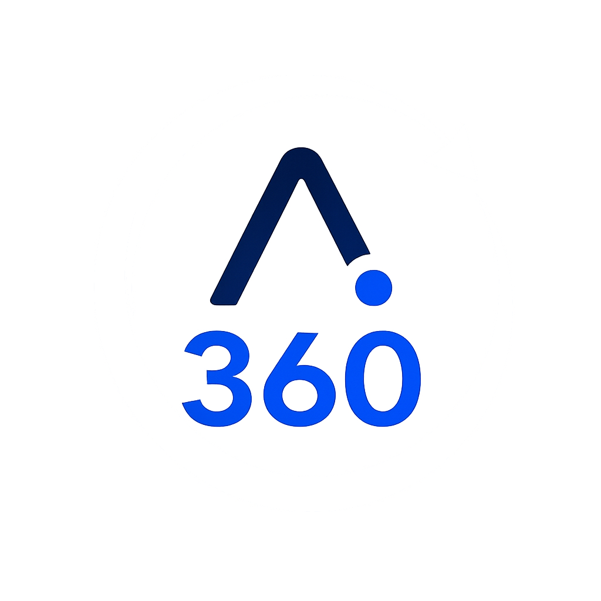
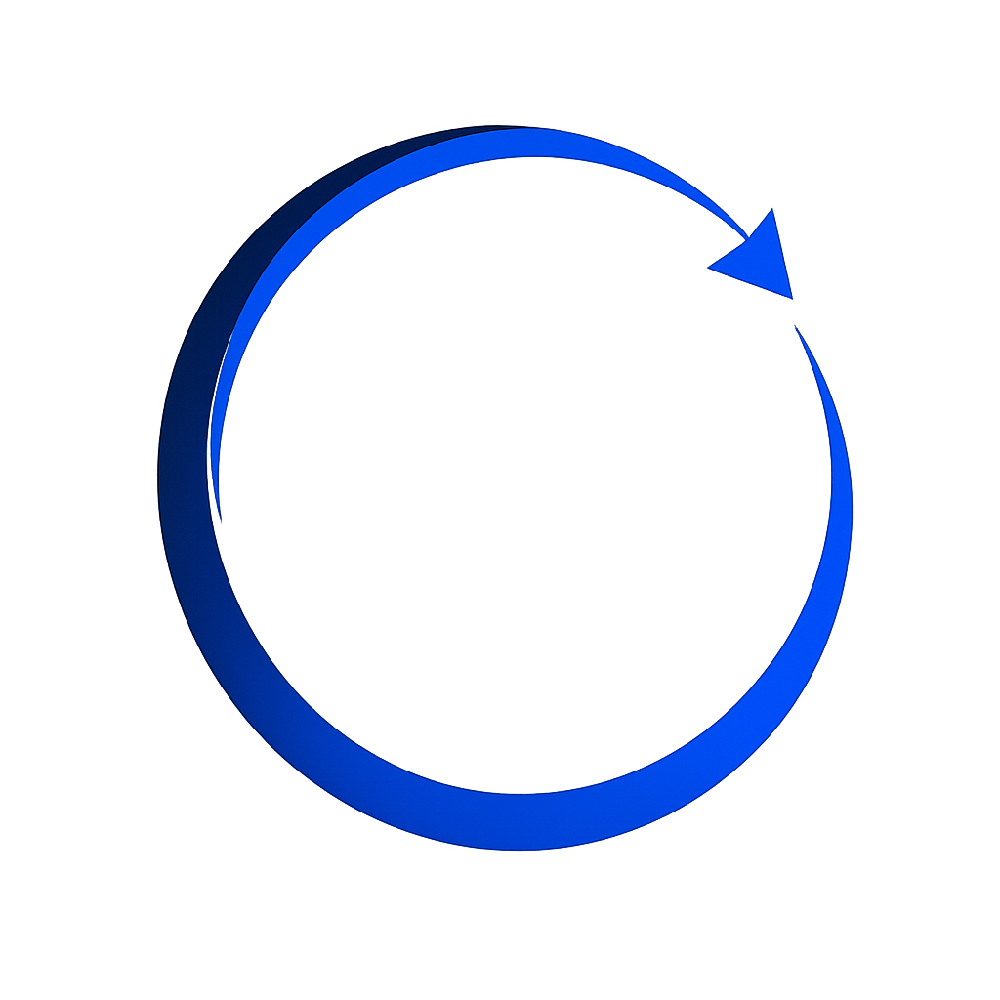

STEP 1無料
公開情報による現在地診断
ホームページ、Googleマップ、SNSなどの公開情報をAIで分析し、現在の強みや改善の可能性を分かりやすく可視化します。
AI-Driven Enterprise Compass & Consulting
AIDECは、AIと人の対話を通じて、企業の現在地と可能性を可視化し、最適な方向を見つける支援を行います。
About AIDEC
AIDECは、AIを売る会社ではありません。AIを活用し、企業が自らの強みや課題に気付き、最適な未来を選択できるよう支援する会社です。
私たちが一方的に答えを決めるのではなく、公開情報、現場での対話、経営者の考えを組み合わせながら、その企業だけの進む方向を一緒に見つけていきます。
Service


公開情報による現状診断から、経営者との対話、具体的な戦略提案まで。3つのステップで、企業の現在地と未来への道筋を可視化します。
ホームページ、Googleマップ、SNSなどの公開情報をAIで分析し、現在の強みや改善の可能性を分かりやすく可視化します。
経営者との対話を通じて、公開情報だけでは分からない理念、現場の状況、本当の課題、今後の考えを整理します。
Step1とStep2で得た情報を統合し、優先順位、改善策、KPI、具体的な行動計画をまとめた戦略レポートを作成します。
Step3は、Step1・Step2終了後、ご希望いただいた場合のみご案内します。
Step1・Step2は無料。Step3（98,800円・税込）は、ご希望いただいた場合のみご案内します。自動的に料金が発生することはありません。
Our Philosophy
AIは目的ではなく、企業の可能性を広げるための手段です。
公開情報と現場での対話を重ね、その企業に合った方向を一緒に見つけます。
難しい専門用語を並べず、経営者が行動に移せる形でお伝えします。
完成形を押し付けず、実際の企業との対話と検証を通じて改善し続けます。
Frequently Asked Questions
無料診断を安心してお申し込みいただけるよう、よくいただくご質問をまとめました。
はい。AI企業診断360のStep1・Step2は無料です。Step3は98,800円（税込）の有料サービスですが、Step1・Step2終了後に内容をご説明し、ご希望いただいた場合のみご案内します。自動的に料金が発生することはありません。
ありません。AIDECは、お申し込みや契約を急かす営業を行いません。診断内容をご確認いただいたうえで、必要だと感じた支援だけをご検討いただけます。
会社名・屋号、ご担当者名、メールアドレス、ご相談内容をご入力ください。ホームページやGoogleビジネスプロフィールのURLは任意です。公開情報が少ない場合も、現在の状況を確認しながら進め方をご相談できます。
はい、個人事業主の方もお申し込みいただけます。業種や事業規模にかかわらず、現在の強みや課題、今後の可能性を整理したい方を対象としています。
Contact
AI企業診断360のStep1・Step2は無料です。自社の現在地や可能性を確認したい方は、お気軽にお問い合わせください。
無料診断を始める入力約3分・Step1／Step2無料・無理な営業はありません